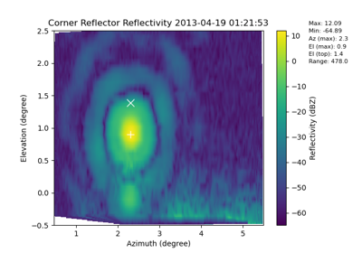

RadTraq Example Gallery
Different examples on how to use RadTraq

Example on how to plot out a corner reflector raster
Example on how to plot out a corner reflector raster


Example on how to calculate and plot cloud masks
Example on how to calculate and plot cloud masks


Example on how to calculate and plot average profiles
Example on how to calculate and plot average profiles